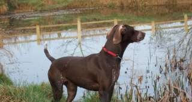

You may now use PayPal to make an ad-hoc or regular donation to GSP Rescue(SW).
You may use this option to make an adoption donation; an ad-hoc donation; a donation in response to a particular fund-raising request; or to enter competitions and purchase items (when offered) from us.
However, please ensure that you include your name and the reason for your donation in the text box provided. N.B. The option to complete the message box appears on the second PayPal page on the left-hand side underneath the payment detail line.
P.S. If you already have a PayPal account, then you can make a payment directly from your existing account to donate@gsprescuesw.co.uk. By paying this way, GSP Rescue (SW) will not be charged any transaction fees, thereby making your donation even more useful to us in helping needy GSPs. As above, please do include a note giving the reason for your donation.
Thank you
You may also donate on a regular basis to help support GSP Rescue (SW) all the year round.
